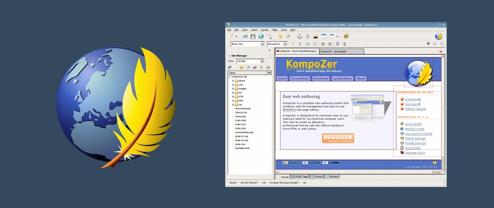
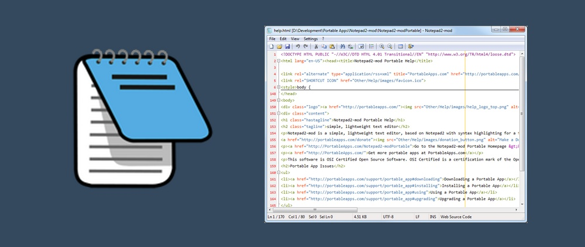
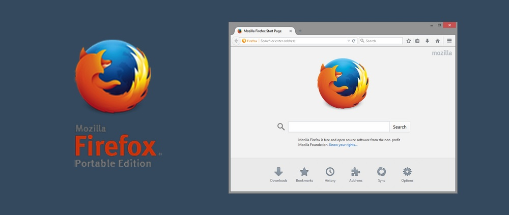
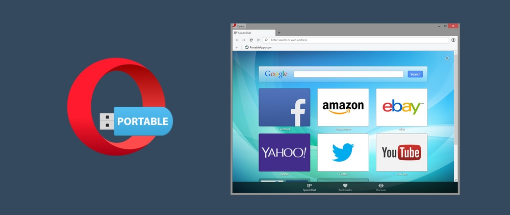
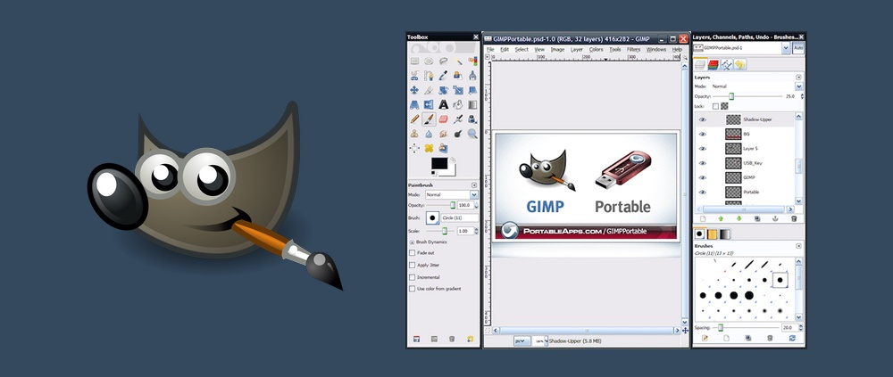
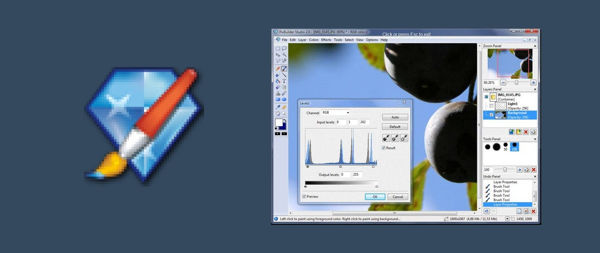

Портативные программы для веб-разработчика
Что это такое?
Портативные программы (portable soft) — программы, не требующие установки. Данный вид программ удобен при использовании на переносных устройствах (флеш-карты, iPod, USB-брелки), чтобы использовать их на любом компьютере, не оставляя какую-либо личную информацию.
В каких случаях они могут пригодиться?
Большинство разработчиков всегда берут с собой ноутбук. Правда не всегда есть возможность его использовать, кроме того, не стоит исключать возможность поломки ноутбука, с потерей данных, без возможности восстановления.
Специально для таких случаев, прекрассно подойдут портативые программы, в виде usb-флешки, с набором всех необходимых программ.
Использование портативных программ
Существует большое количество программ для веб-раработчика, которые не требуют установки и отлично подходят для хранения на флешке, и при необходимости использовать для любой работы на компьютере, без дополнительного программного обеспечения.
Далее представлен список портативных программ, которые на мой взгляд пригодятся любому веб-разработчику.
№1 Редакторы кода
KompoZer Portable
KopmpzerPortable — (ранее известный как Nvu Portable), это замечательный HTML-редактор, который по своей функциональности напоминает Dreamweaver. Конечно он не такой красивый, однако прекрасно подходит для редактирования кода, и гораздо более удобен, чем обычный блокнот.
Notepad2-mod Portable
Notepad2-mod — это легкий текстовый редактор с подсветкой синтаксиса для нескольких часто используемых языков програмирывания, и с некоторыми новыми функциями за пределами обычного Notepad2, например, сгибанием кода, закладками и дополнительными языками.
№2 Браузеры
Firefox Portable Edition
Firefox — наиболее популяряный браузер среди веб-разработчиков, со своей коллекцией расширений, также доступен и в виде портативной версии. Представляет собой полный аналог обычного браузера, без необходимости установки в систему.
Opera USB Portable
Opera — эще один популярный браузер. "Мобильный" вариант с руссским интерфесом, который можно записать на любое переносное Flash или USB устройство для дальнейшего использования (плюсы в этом случае: никаких следов, включая отсутствие записей в системном реестре).
№3 Редактирование изображений
GIMP Portable
GIMP — бесплатная альтернатива фотошопу, как нетрудно догадаться из заголовка, тоже имеет портативную версию. Если для работы вы используете фотошоп, то вам поначалу будет трудно привыкнуть к интерфейсу гимпа, однако если вам требуется портативная замена фотошопу, это самая лучшая альтернатива.
PixBuilder Portable
PixBuilder Portable — бесплатная программа для редактирования изображений для цифрового редактирования фотографий, обработки изображений и изменения размера. Для цифрового редактирования фотографий вы можете использовать множество профессиональных функций качества. Например, он поддерживает слои и формат фильтра .8bf для Photoshop.
№4 Архиваторы
7-Zip Portable

7-zip — это популярный архиватор, понимающий различные типы архивов, включая ZIP, RAR, TAR, GZ и другие. Поскольку веб-разработчикам часто приходится иметь дело с различными типами архивав, никогда не помешает иметь под рукой портативную версию этого архиватора.